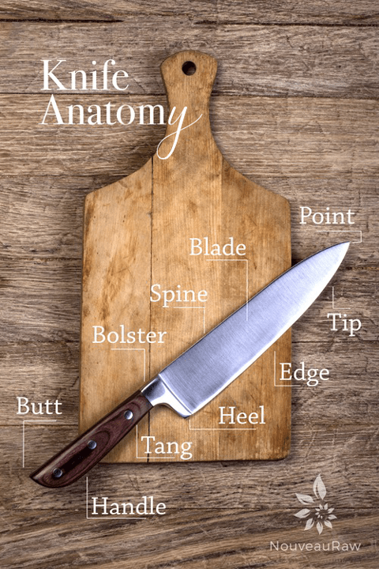

#1 – Knife Anatomy

Knife Anatomy… get out the scrubs, face guards, gloves, and sponges (hollers, “I need more light over here!”). Clearly, I have been watching too much TV. When it comes to investing in the right tools for the job, it is important to learn all that you can about these items.
So, today we are diving into the parts and pieces which create this amazing tool. Each part of the knife plays a role in the utility, balance, and longevity of the knife. And let’s not forget… safety.
Knives are either forged or stamped, they are made out of different materials, and are designed for particular functions. I am not going to get into that topic because it’s rather complex.
Today’s post is all about the different parts that make up this tool. To help explain the anatomy of a knife, I am going to use the basic knife in the photo as my model.
Whether a knife costs $20 or $200, all chef’s knives have the same basic parts and construction. From the pointy tip to the butt, take this comprehensive walk through the anatomy of a knife with me. You might think of a knife as having just two parts; blade and handle. Oh but wait! There is indeed more. Let’s break it down…
THE KNIFE HANDLE
Knife Butt
- The back end of the knife.
- Do not use the butt of a knife as a hammer. Tempting I know, but that’s not the intended use.
Knife Handle
- Knife handles are made from various materials; hardwoods, softwoods such as walnut, plastic, and vinyl.
- Most knife handles are ergonomically designed to provide comfort and fit. You’ll want to make sure it’s comfortable and fits your hand.
- It shouldn’t feel slippery or cause you to have to grip excessively hard. If you are gripping for dear life, you will soon experience hand fatigue.
- Without a good grip, you put yourself in danger of the knife slipping and cutting yourself.
Knife Tang
- The tang is actually part of the blade itself that extends into the handle.
- Tangs may run the full length or just partially into the handle. For a more durable knife, look for knives that have a full tang. One with a partial tang is best for lighter jobs.
- It gives the knife strength, stability, and balance.
- Not all tangs are visible, such as the Shun knife shown in the diagram above.
Knife Bolster
- The bolster is found between the blade and handle.
- It helps to protect and secure the handle.
- One way to hold a knife is to pinch the bolster with your index finger and thumb, wrapping the rest of your fingers around the handle.
- It also creates a sort of cushion, or guard, for your fingers, depending on your grip.
THE KNIFE BLADE
Knife Heel
- The last few inches of a blade is considered the heel.
- It is the widest part of the knife.
- It is efficient for making quick, precise cuts for jobs that require more pressure. Think root veggies.
The Spine
- The spine refers to the full thickness portion of the blade, opposite the cutting edge.
- The thickness of the spine tapers down to the cutting edge of the blade.
- A thick spine makes for a heavier knife which is perfect for cutting really dense veggies or fruits. A thin spine is lighter and ready to tackle the simpler tasks such as cutting soft produce.
- In my house, this section of the knife is known as the “pickle jar opener.” You know, those times where you can’t get the jar open so you take the back of a knife and tap around the edge of the lid to open it?
Knife Edge
- Where most of the cutting action takes place.
- It is essential to protect the edge and to hone and sharpen as needed.
- There are many different styles of edges, all providing a different function.
Knife Tip
- The tip consists of the upper third portion of the blade.
- The tip is what starts the cut.
- Keep the point of the knife on the cutting board while you chop.
- This section is used for delicate cuts and/or used as an anchor during mincing.
Knife Point
- The very tip of the blade, often used for piercing.
- When carrying a knife, ALWAYS handle it with its point towards the ground, holding it straight with the cutting edge facing behind you.
So that is the anatomy of a knife in a nutshell. Not as complicated as one might think. If you have young ones who are eager to be mommy or daddy’s little sous chef but aren’t quite ready to wield a knife, let them observe you. While doing so, teach them about the different parts of the tool. Make a game out of it. Without them touching the knife, point to the various sections and have them repeat back to you what they are. Teach them knife safety tips and how to respect them.
Knife skills should be taught at home, just like learning to ride a bike or drive a car. Don’t you agree?!
© AmieSue.com